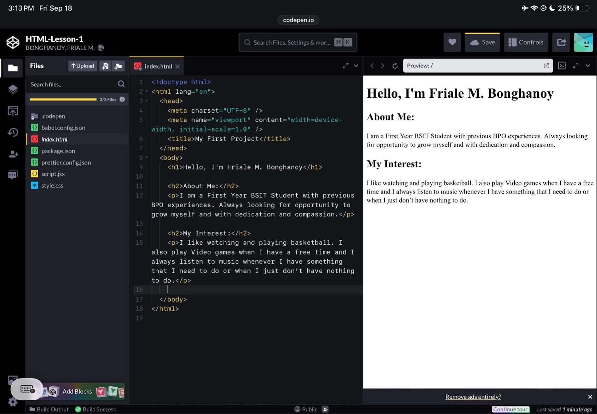
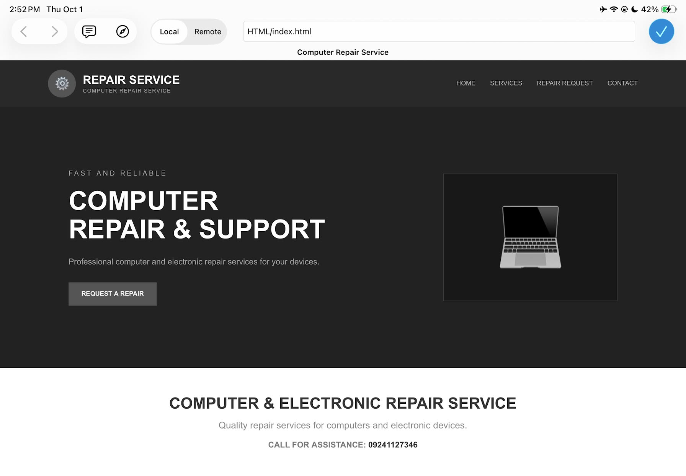

01 / WEB BASICS
HTML5
HTML is how I lay out the structure of a webpage, including headings, links, images, and forms.
BSIT / FIRST YEAR
I'm a first-year student who loves technology, creative design, and building useful things online. This portfolio shows my skills, my projects, and my progress as I keep learning and improving.
ABOUT ME
My name is Friale Bonghanoy, and I'm a first-year BSIT student at Cordova Public College. I am eager to develop my skills in programming, web development, and problem-solving. As I begin my journey in the IT field, I look forward to gaining knowledge, exploring new opportunities, and growing into a skilled IT professional.
I consider myself a responsible, hardworking, and dedicated individual who believes that learning is a continuous process. Although I am still at the beginning of my journey, I am willing to face challenges, learn from my mistakes, and take every opportunity to grow both personally and academically.
This portfolio serves as a collection of my skills, activities, projects, and achievements throughout my journey as an IT student. My goal is to continuously improve, gain valuable experience, and become a skilled IT professional in the future.
This year, my goal is to make more websites, strengthen my graphic design, and grow into a confident developer and designer.
WHAT I'M LEARNING
01 / WEB BASICS
HTML is how I lay out the structure of a webpage, including headings, links, images, and forms.
02 / STYLING
I add style with CSS and use Flexbox and grid so my layouts look organized on laptops and phones alike.
03 / FAST STYLING
Utility classes let me set colors, spacing, and responsive layouts in less time while keeping my code clear.
04 / VISUAL DESIGN
I like designing layouts, picking colors, and pairing fonts so that every page feels neat and easy to read.
MY PROJECTS
These are some of my academic projects as a first-year BSIT student. Each project represents my learning experience, creativity, and progress in web development.

01 / HTML
This is my first webpage project created using HTML. It introduces myself through sections such as About Me and My Interests. Through this activity, I learned how to use basic HTML elements, including headings and paragraphs, to organize and present information on a webpage. This project helped me understand the fundamentals of web development.
View image preview →
02 / HTML & CSS
This project is a website designed for a computer and electronic repair service. It features a navigation menu, an introduction to the repair service, a laptop illustration, and a repair request button. Through this activity, I practiced combining HTML and CSS to create a structured and visually organized website. It helped me improve my understanding of webpage layouts, styling, and user-friendly design.
View image preview →CONTACT
If you have a project idea, a design to show me, or a question about web development, I'd be glad to hear from you. Email me and I'll reply soon.
You can email me at
frialebonghanoy12@gmail.comCebu City, Philippines
Cordova Public College · BSIT
Always open to teamwork and new ideas.